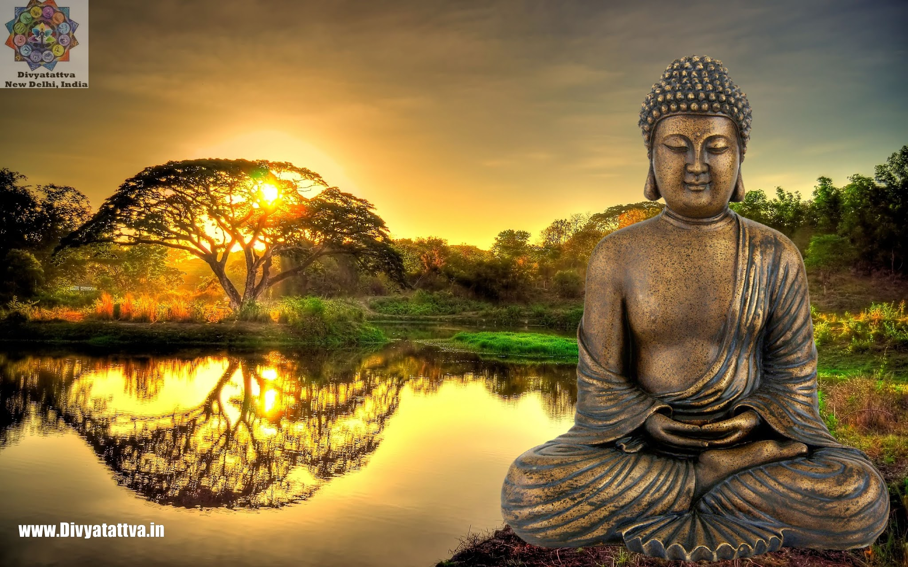
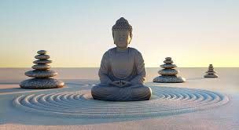

Gautama Buddha
Gautama Buddha, popularly known as the Buddha (also known as Siddhattha Gotama or Siddhārtha Gautama[note 3] or Shakyamuni), was an ascetic, a religious leader and teacher who lived in ancient India (c. 6th to 5th century BCE or c. 5th to 4th century BCE).[6][7][8][note 4] He is regarded as the founder of the world religion of Buddhism, and revered by Buddhists as an enlightened being,[9] who rediscovered an ancient path to freedom from ignorance, craving and the cycle of rebirth and suffering. He taught for around 45 years and built a large following, both monastic and lay.[10] His teaching is based on his insight into the arising of suffering or dissatisfaction and its ending—the state called Nirvana (lit. vanishing or extinguishing).
Names and titles
Besides "Buddha" and the name Siddhārtha Gautama (Pali: Siddhattha Gotama), he was also known by other names and titles, such as Shakyamuni ("Sage of the Shakyas").[19][note 5] The clan name of Gautama means "descendant of Gotama", and comes from the fact that Kshatriya clans adopted the names of their house priests.[20][21] In the early texts, the Buddha also often refers to himself as Tathāgata (Sanskrit: [tɐˈtʰaːɡɐtɐ]). The term is often thought to mean either "one who has thus gone" (tathā-gata) or "one who has thus come" (tathā-āgata), possibly referring to the transcendental nature of the Buddha's spiritual attainment.
Historical person
Scholars are hesitant to make unqualified claims about the historical facts of the Buddha's life. Most of them accept that the Buddha lived, taught, and founded a monastic order during the Mahajanapada era during the reign of Bimbisara (c. 558 – c. 491 BCE, or c. 400 BCE),[26][27][28] the ruler of the Magadha empire, and died during the early years of the reign of Ajatashatru, who was the successor of Bimbisara, thus making him a younger contemporary of Mahavira, the Jain tirthankara.[29][30] While the general sequence of "birth, maturity, renunciation, search, awakening and liberation, teaching, death" is widely accepted,[31] there is less consensus on the veracity of many details contained in traditional biographies.